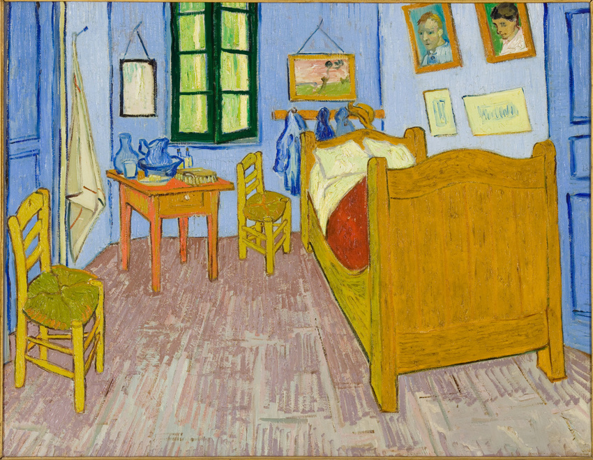
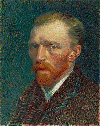
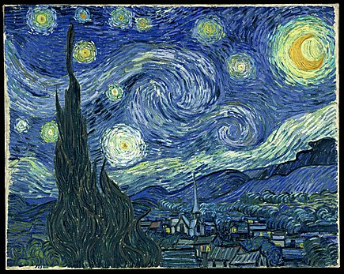
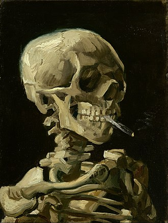
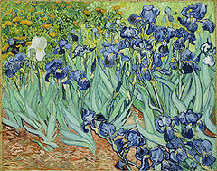
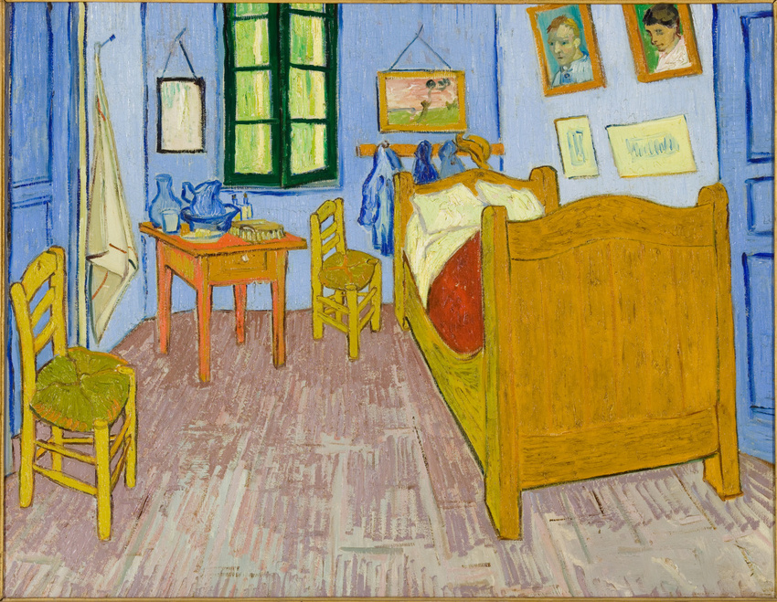
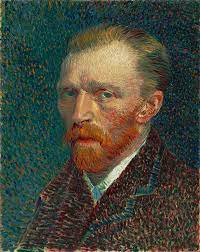
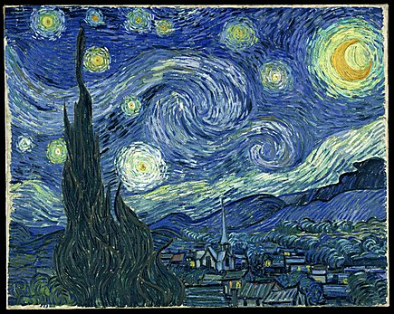
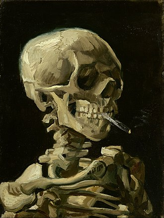
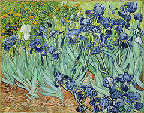

Vincent van Gogh
Vincent van Gogh è considerato uno dei pittori più importanti della storia dell'arte. Nato nei Paesi Bassi nel 1853, ha trascorso gran parte della sua vita in Francia, dove ha sviluppato il suo stile unico e riconoscibile. Van Gogh è conosciuto per i suoi dipinti luminosi e colorati, come "Notte stellata" e "Il campo di grano con i corvi". La sua tecnica era caratterizzata da pennellate decise e colori vibranti, che creavano un senso di movimento e energia nelle sue opere. Tuttavia, van Gogh ha lottato con problemi mentali e emotivi per gran parte della sua vita, che alla fine hanno contribuito al suo tragico suicidio nel 1890. Nonostante le sue sfide personali, il lavoro di van Gogh continua a ispirare e influenzare generazioni di artisti. La sua capacità di trasformare la realtà in emozioni dipinte lo rende un'icona dell'arte moderna.
 








